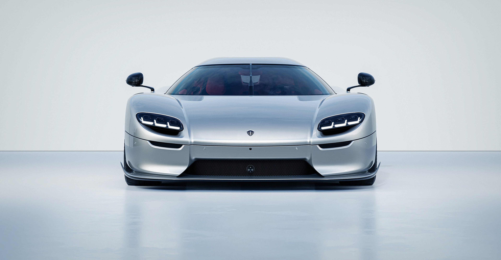
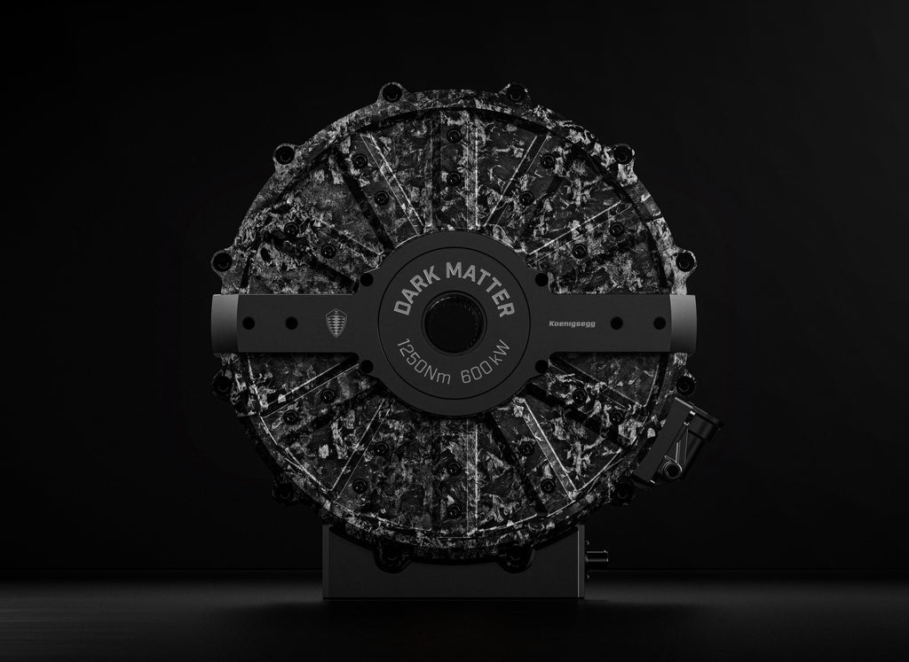
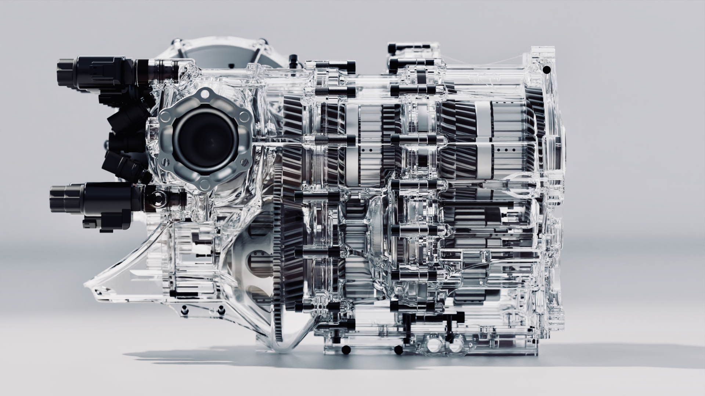
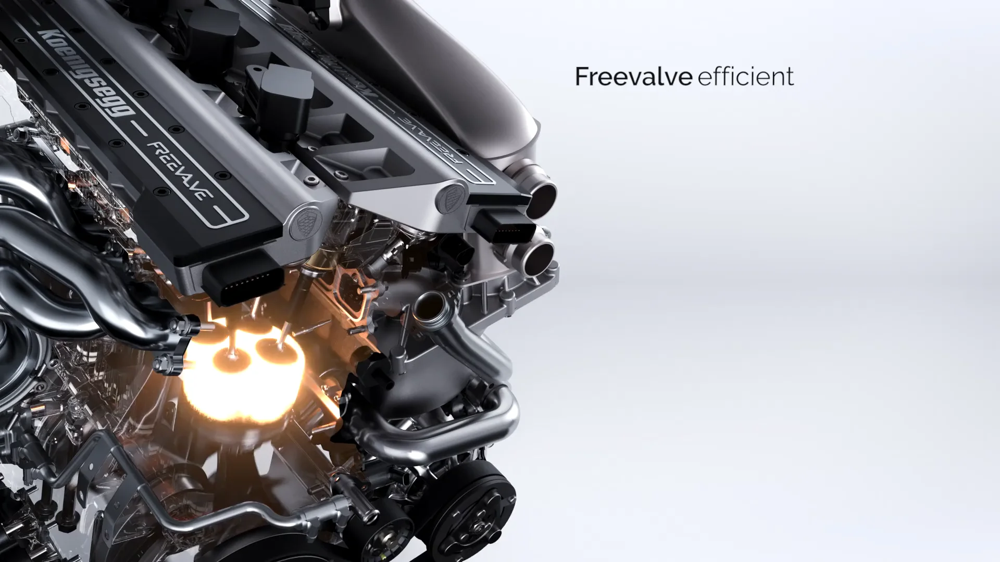

Our cars
Innovations
Technological
Achievements

Dark Matter Motor
The Koenigsegg Dark Matter motor represents one of the most groundbreaking innovations in modern automotive engineering.
Developed for the Koenigsegg Gemera, this ultra-compact and lightweight electric motor produces an astonishing
800 horsepower and 1250 Nm of torque, while weighing just 39 kg.
Its revolutionary "Raxial Flux" design combines the advantages of both radial and axial flux technologies,
resulting in exceptional power density, improved efficiency, and unmatched performance in its class.
This technological breakthrough plays a key role in delivering the Gemera’s hypercar-level performance,
once again demonstrating Koenigsegg’s commitment to pushing the boundaries of innovation and redefining
the future of high-performance vehicles.
Light Speed Transmission
The Koenigsegg Light Speed Transmission is one of the most advanced gearbox systems ever developed.
Designed for the Koenigsegg Jesko, this revolutionary transmission uses multiple clutches to allow
near-instant gear changes between any gear, without the need to shift sequentially.
Unlike traditional dual-clutch or sequential gearboxes, the Light Speed Transmission can jump directly
from any gear to another in milliseconds, delivering uninterrupted acceleration and maximum performance.
This breakthrough technology enhances driving dynamics, improves responsiveness, and helps the Jesko
achieve extreme levels of speed and efficiency, further reinforcing Koenigsegg’s reputation for
engineering innovation.


Freevalve Technology
Koenigsegg’s Freevalve technology represents a revolutionary step in internal combustion engine design.
Unlike traditional engines that rely on camshafts, Freevalve uses individually controlled pneumatic
actuators to operate each valve independently.
This camless design allows for complete control over valve timing, improving power, fuel efficiency,
and emissions while reducing engine weight and complexity. The result is a more responsive and
adaptable engine capable of delivering exceptional performance.
Used in the Koenigsegg Gemera’s innovative three-cylinder engine, Freevalve technology showcases
Koenigsegg’s commitment to redefining conventional engineering and pushing the boundaries of
automotive innovation.